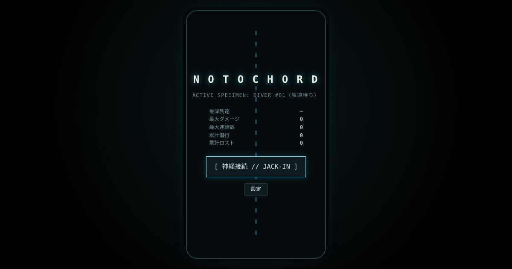
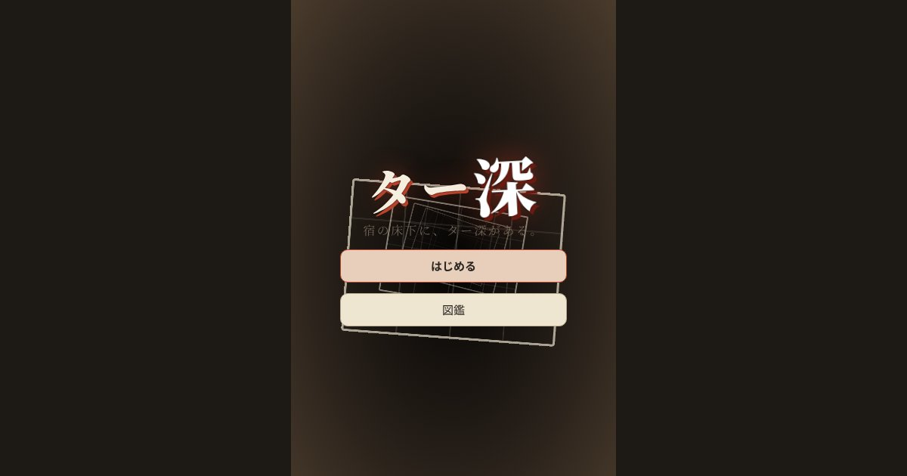
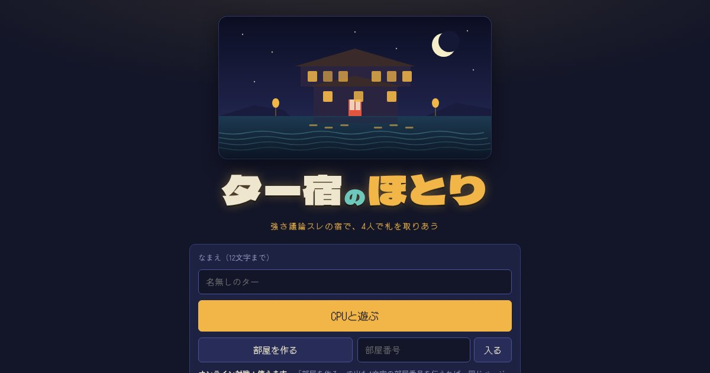
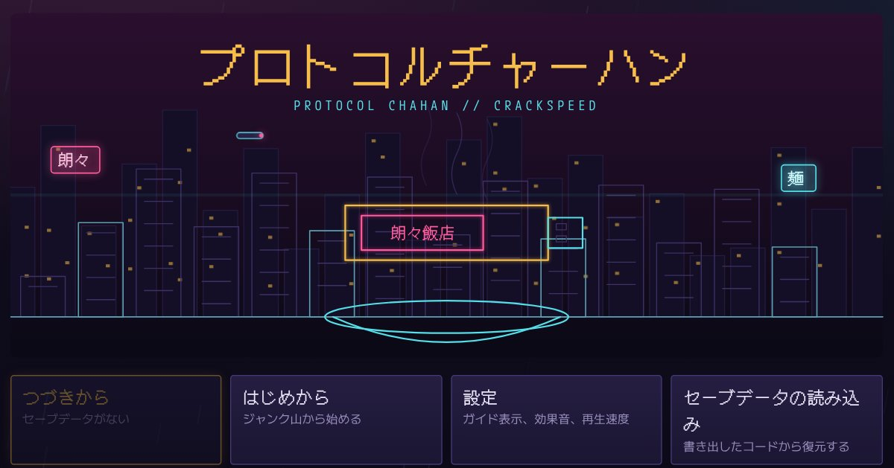
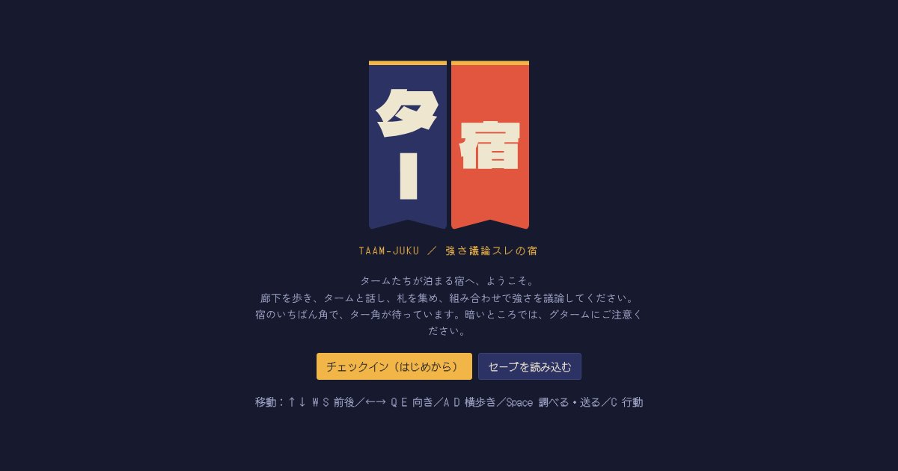
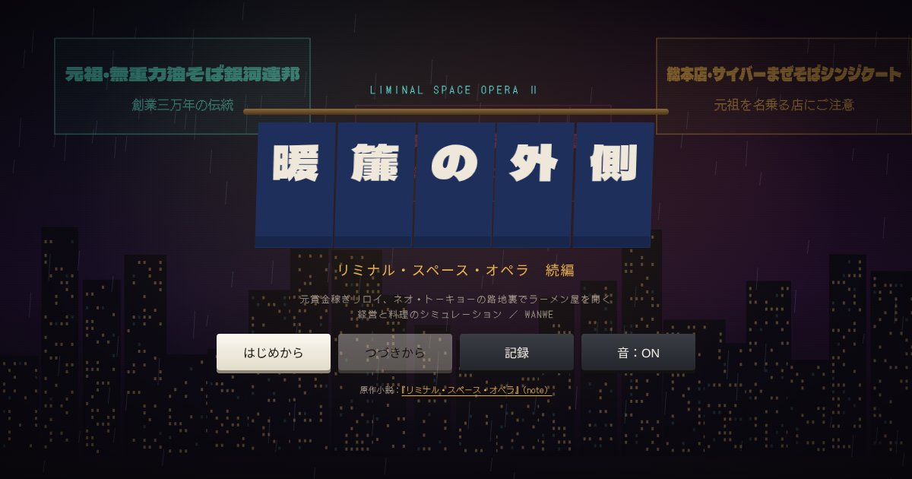

AIと一緒に作ったブラウザゲームを置いています。インストール不要で、そのまま遊べます。

神経接続を確認。目覚めよ、検体 #01。
巨大製薬コンツェルンの生体演算中枢『SPINE』へ神経接続して潜り、深層の機密データを抜き取るパズル×ローグライト。5×7の盤面でノードをつないで連結させ、企業の免疫監査官を倒しながら潜っていく。契約編（RANK D〜A）を抜けた先には、終わりのない深淵潜行が待つ。スマホではホーム画面に追加すると、アプリのように開ける。
パズル、ローグライトスマホ縦画面推奨 / PC

宿の床下に、ター深がある。
宿の床下に広がるター深へ潜って、札を拾って、帰ってくるデッキ構築ローグライト。地下帳場、襖の迷い、議論の淵、欠番区画、Tier8の5つの層を抜けた先、B16の最深部で最後の戦いが待つ。その下にも、名前のない階がどこまでも続く。寄り道には、屋台横丁、校舎、湯けむり、ゲーセン、過去ログ、工場、裏山、屋根裏の8つのテーマの穴もある。持ち帰った宿銭とお土産で宿を改装し、宿泊客（全8人）を増やしながら何度でも潜る。スマホではホーム画面に追加すると、アプリのように開ける。
デッキ構築ローグライトスマホ縦画面推奨 / PC

強さ議論スレの宿で、4人で札を取りあう
手札を回しながら1枚ずつ札を取り、カテゴリのティアを上げ下げして点を競うドラフト型のカードゲーム。収録は45セット312種。CPU戦のほか、部屋番号を伝えればオンラインで4人対戦もできる。
カードゲーム、4人対戦PC / スマホ

PROTOCOL CHAHAN // CRACKSPEED
ヨコハマ・ポートランド・ディヴィジョン。ジャンク漁りのチャンカーが拾ったのは、地図から消えた四つ星中華の、最後の一皿だった。敵のメモリを引っこ抜いて奪い、自分に挿して技を覚える、ハックと熱管理のコマンドバトルRPG。
攻略本『プロトコルチャーハン 解体真書』（PDF）
RPGPC / スマホ

TAAM-JUKU 強さ議論スレの宿
タームたちが泊まる宿へようこそ。廊下を歩き、タームと話して札を集め、組み合わせで強さを議論する。3つの座敷を取り合うカードバトルと、宿の探索のゲーム。
探索、カードバトルPC / スマホ

リミナル・スペース・オペラ 続編
元賞金稼ぎリロイが、ネオ・トーキョーの路地裏でラーメン屋を開く。具材を選んで一杯を組み立て、値段を決めて店を回す、経営と料理のシミュレーション。
シミュレーションPC / スマホ